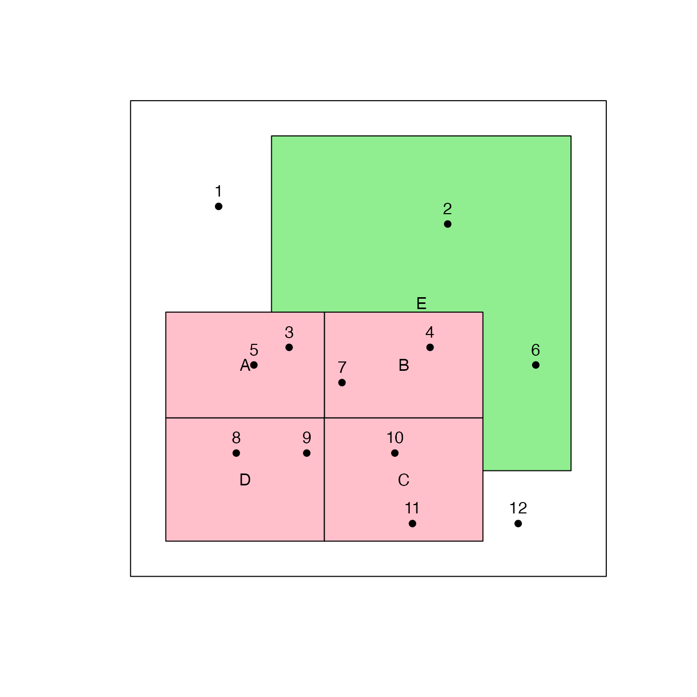
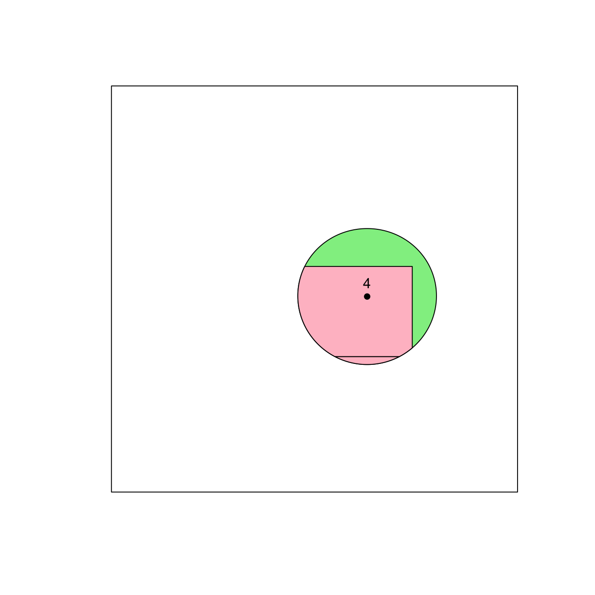
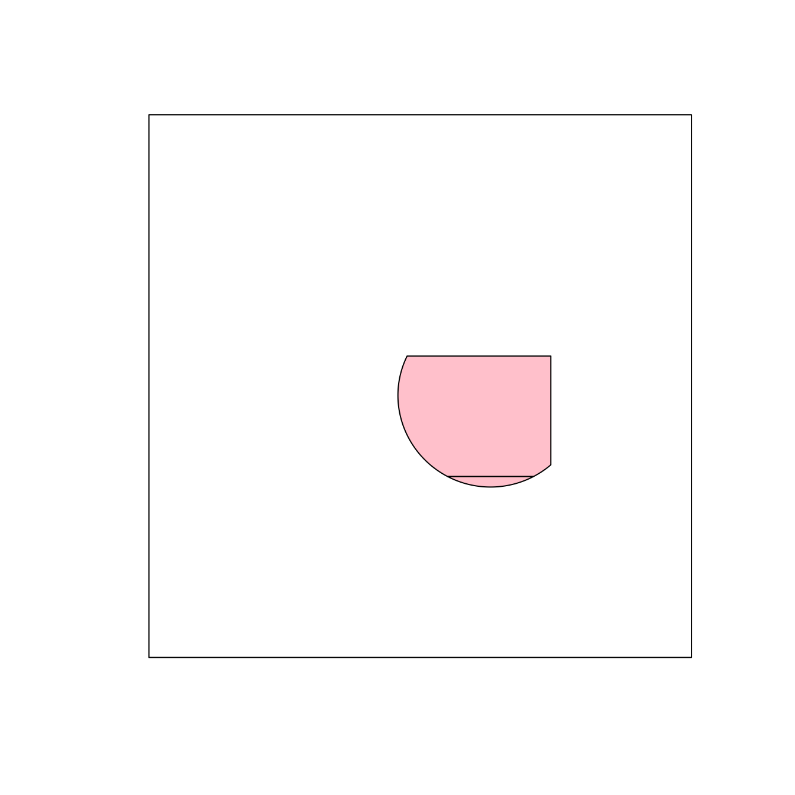
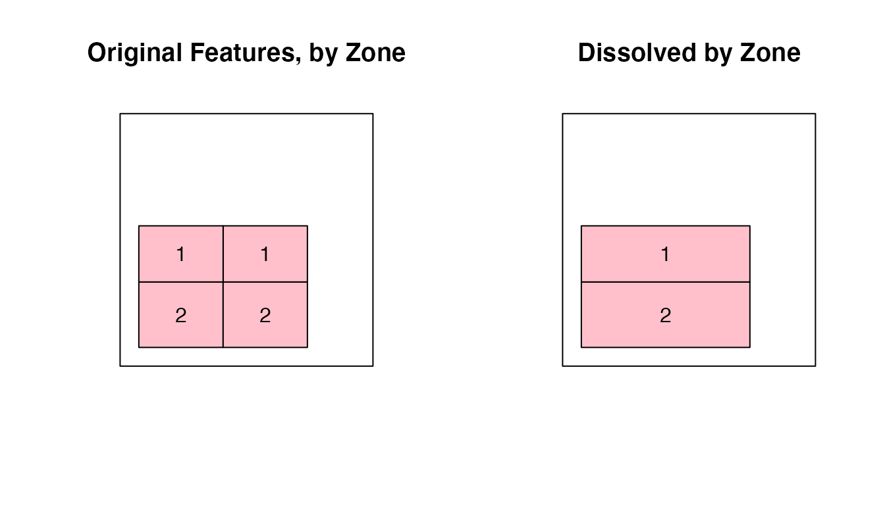
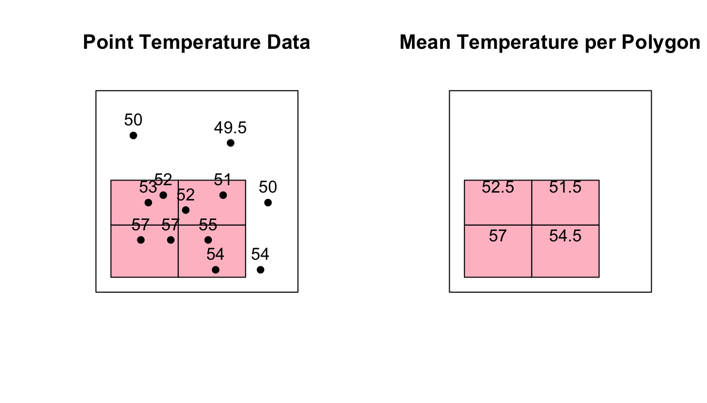

vignettes/articles/Basic_GIS_in_R.Rmd
Basic_GIS_in_R.RmdThe goal of this document is to show how basic spatial operations common to Geographic Information Systems (GIS) can be done in R using S4 objects and the sp and raster packages. I have chosen to focus on vector data, specifically point and polygon sets, as those are the ones most commonly encountered when using the MazamaSpatialUtils.
An easy way to create a rectangular Spatial Polygon Data Frame is to use the Bounding Box, or extent, of another spatial feature to define the geometry of the feature you want to create. A separate data frame with feature attributes can then be attached to this geometry to form a SpatialPolygonsDataFrame.
library(raster)
# polygon A
poly_a <- as(raster::extent(2.0, 11.0, 9.0, 15.0), "SpatialPolygons")
df_a <- data.frame(name = "A", id = "1", county = "1", type = "tract", zone = "1")
spdf_a <- SpatialPolygonsDataFrame(poly_a,df_a)If multiple features are present, it’s possible to bind them all into a single multiploygon feature. Here 4 separate polygons; “spdf_a”, “spdf_b”, “spdf_c” and “spdf_d” are combined into a single new feature named “spdf_abcd”.
# Define a coordinate reference system to use on all features
grs80 <- CRS("+proj=longlat +ellps=GRS80 +datum=NAD83 +no_defs +towgs84=0,0,0 +units=m")
# "Bind" Polys A,B,C & D into one multipolygon SPDF
spdf_abcd <- raster::bind(spdf_a, spdf_b, spdf_c, spdf_d, keepnames = TRUE)
proj4string(spdf_abcd) <- grs80
proj4string(spdf_e) <- grs80
summary(spdf_abcd)## Object of class SpatialPolygonsDataFrame
## Coordinates:
## min max
## x 2 20
## y 2 15
## Is projected: FALSE
## proj4string :
## [+proj=longlat +ellps=GRS80 +datum=NAD83 +no_defs +towgs84=0,0,0
## +units=m]
## Data attributes:
## name id county type zone
## A:1 1:1 1:4 tract:4 1:2
## B:1 2:1 2:2
## C:1 3:1
## D:1 4:1Note that a CRS has been assigned to the new feature. This is needed in order to do spatial comparisons bewteen this feature and others later on.
There are multiple ways in which points can be converted into Spatial Point Data Frames.
They share the same basic idea though - take a regular data frame which contains X and Y values that define point coordinates and then convert it into a SpatialPointsDataFrame using the sp package. Two ways are shown below. In both cases, a data frame is used to define the point locations and attributes of the data.
# Create a data frame with coordinates and some data, temperature readings, perhaps...
temp_df <- read.table(header = TRUE, text = "
id x y temp
1 5 21 50
2 18 20 49.5
3 9 13 52
4 17 13 51
5 7 12 53
6 23 12 50
7 12 11 52
8 6 7 57
9 10 7 57
10 15 7 55
11 16 3 54
12 22 3 54")# Extract the x and y coordinates as a separate vector
xy <- temp_df[c("x", "y")]
# Convert the point df into a SpatialPointsDataFrame
temp_spdf <- sp::SpatialPointsDataFrame(coords = xy,
data = temp_df,
proj4string = grs80)
temp_spdf@data$id <- as.character(temp_spdf@data$id)
summary(temp_spdf)## Object of class SpatialPointsDataFrame
## Coordinates:
## min max
## x 5 23
## y 3 21
## Is projected: FALSE
## proj4string :
## [+proj=longlat +ellps=GRS80 +datum=NAD83 +no_defs +towgs84=0,0,0
## +units=m]
## Number of points: 12
## Data attributes:
## id x y temp
## Length:12 Min. : 5.00 Min. : 3.00 Min. :49.50
## Class :character 1st Qu.: 8.50 1st Qu.: 7.00 1st Qu.:50.75
## Mode :character Median :13.50 Median :11.50 Median :52.50
## Mean :13.33 Mean :10.75 Mean :52.88
## 3rd Qu.:17.25 3rd Qu.:13.00 3rd Qu.:54.25
## Max. :23.00 Max. :21.00 Max. :57.00# Use the coordinates() function to define the coordinate fields
sp::coordinates(temp_df) <- ~x+y
sp::proj4string(temp_df) <- grs80
temp_df@data$id <- as.character(temp_df@data$id)
summary(temp_df)## Object of class SpatialPointsDataFrame
## Coordinates:
## min max
## x 5 23
## y 3 21
## Is projected: FALSE
## proj4string :
## [+proj=longlat +ellps=GRS80 +datum=NAD83 +no_defs +towgs84=0,0,0
## +units=m]
## Number of points: 12
## Data attributes:
## id temp
## Length:12 Min. :49.50
## Class :character 1st Qu.:50.75
## Mode :character Median :52.50
## Mean :52.88
## 3rd Qu.:54.25
## Max. :57.00Method 2 converts the data frame in place and in doing so, the columns with the coordinate values are moved out of the @data slot. This can be advantageous if you don’t need the coordinates for anything more than to define the point geometry.
Now that we have some features created, what do they look like? The basic plot() function works extremely well with S4 Spatial objects. One thing to keep in mind, though, is that the first feature plotted defines the plot extents. One way to take advantage of this is to create a “map area” feature which can be used to both center subsequent plots and also to define a neatline for the map.
# bbox (just needed to be able to plot 2 objects that don't share the same bbox)
bbox <- as(raster::extent(0, 27.0, 0, 27.0), "SpatialPolygons")
# Invisible bbox to set the plot extent
plot(bbox, col = "transparent", border = "transparent")
# Plot polygon features and label them
plot(spdf_e, col = "lightgreen", add = TRUE)
plot(spdf_abcd, col = "pink", add = TRUE)
text(spdf_abcd, labels = spdf_abcd$name)
text(spdf_e, labels = spdf_e$name)
# Plot the points and label them
plot(temp_spdf, add = TRUE, col = "black", pch = 16)
# Label the points
text(temp_spdf, labels = temp_spdf$id, pos = 3)
# Overplot the bbox as a neatline
plot(bbox, add = TRUE)
Generally speaking, there are 5 operations commonly performed while doing spatial analysis. (Taken from 5 common ArcToolbox Tools section of online paper by Univ. or Maryland.)
The raster and sp packages provide all the functionality needed to perform these operations.
The raster::buffer() function buffers a specific distance away from a feature or group of features. It uses the units of the map projection as the units for the buffer distance. Often a buffer is used to define a zone around a specific point. Here, we will create a 500,000 meter buffer around the temp_df point feature with “id = 4”.
# Subset a single point out of set
point_4 <- subset(temp_df, id == 4)
# Buffer around the point
buffer_zone <- raster::buffer(point_4, width = 500000)
# plot the buffer
plot(buffer_zone, col = "gray", add = TRUE)
# plot the point
plot(point_4, add = TRUE, col = "black", pch = 16)
text(point_4, labels = point_4$id, pos = 3)Clipping works a bit like a cookie-cutter. It is done using the raster::intersect() function which takes an input geometry and calculates the spatial intersection with another geometry. Here we will clip the pink “spdf_abcd” feature and the green “spdf_e” feature with the “buffer_zone” we created above.
# Clip the features
abcd_clip <- raster::intersect(spdf_abcd, buffer_zone)
e_clip <- raster::intersect(spdf_e, buffer_zone)
# Plot the new clipped features
plot(e_clip, col = "lightgreen", add = TRUE)
plot(abcd_clip, col = "pink", add = TRUE)
# plot the point
plot(point_4, add = TRUE, col = "black", pch = 16)
text(point_4, labels = point_4$id, pos = 3)
It is very important to note that the new "_clip" features contain all of the attributes which were contained in the “spdf_abcd” and “spdf_e” SpatialPolygonsDataFrames. In other words, the feature that was clipped retained all of its original attribute information.
head(abcd_clip@data)
## name id county type zone
## 1 B 2 1 tract 1
## 2 C 3 1 tract 2
head(e_clip@data)
## name id county type
## 1 E 1 2 forestThis is ONLY because the “buffer_zone” (clipping) feature lacked a data frame of its own and was simply a SpatialPolygon object, and not a SpatialPolygonsDataFrame.
summary(buffer_zone)
Object of class SpatialPolygons
Coordinates:
min max
x 12.390806 21.60919
y 8.479751 17.51868
Is projected: FALSE
proj4string :
[+proj=longlat +ellps=GRS80 +datum=NAD83 +no_defs +towgs84=0,0,0 +units=m]The behavior of the raster::intersect() function is very different when both features are SpatialPolygonsDataFrames. When 2 SpatialPolygonsDataFrames are intersected, the default behavior of the raster::intersect() function is to combine the attributes from both data sets. Which brings us to the next type of operation.
The intersection operation computes the spatial intersection between 2 features and returns a new geometry that is this intersection area. It also combines the feature attributes of both features. In the example below, we are intersecting the 2 clipped features with each other. Note the attributes and the geometry that are returned. Unsurprisingly, this is also done with the raster::intersect() function.
combined_clips <- raster::intersect(abcd_clip, e_clip)
head(combined_clips@data)
## name.1 id.1 county.1 type.1 zone name.2 id.2 county.2 type.2
## 1 B 2 1 tract 1 E 1 2 forest
## 2 C 3 1 tract 2 E 1 2 forest
If we look at just the attributes from “abcd_clip” (which was created in the “Clip” section above) we see that it only contains attributes from the original “spdf_abcd” feature set.
This behavior is consistent with how the intersection tool works in other systems and in fact, here is a description of the difference between the “clip” and “intersection” functions in ArcGIS.
What’s the difference between the clip tool and the intersect tool? The main difference is the resulting attributes. When you run the clip tool, only the input features attributes will be in the output. When you use the intersect tool, the attributes from all features will be in the output.
When performing clipping operations with 2 SpatialPolygonsDataFrame features, it may be useful to create your own function which modifies the contents of the returned data frame to match the definition listed above.
While this isn’t listed as one of the 5 basic operations, I include it here because I think it’s important and not generally easy to find a solution for. Very often what we want is to compute the difference between 2 spatial features, rather than the area of intersection. For example, in the clipped regions we’ve created above, the “e_clip” region is a full disk that extends behind the “abcd_clip” region.
If we only wanted the region of “e_clip” that DOESN’T intersect with “abcd_clip”, it’s very R-like and easy to obtain that by subtracting one from the other.
# Subtract abcd_clip geometry from e_clip geometry
disjoint_e_clip <- (e_clip - abcd_clip)
plot(disjoint_e_clip, col = "lightgreen", add = TRUE)As an added bonus, we retain the original attributes as well.
head(disjoint_e_clip@data)
## name id county type
## 1 E 1 2 forestThe Dissolve operation is a form of spatial aggregation in which the internal borders of a feature set are removed, or dissolved, leaving larger regions behind that are the result of aggregating by a specific value. This aggregation value is usually defined by a column in the data set. Appropriately enough, the function that does this for us is named raster::aggregate().
Our original “spdf_abcd” data set contains a “zone” field that we can use to dissolve the features with.
head(spdf_abcd@data)
## name id county type zone
## 1.1 A 1 1 tract 1
## 1.2 B 2 1 tract 1
## 1.3 C 3 1 tract 2
## 1.4 D 4 1 tract 2We can see the way that the zones are situated in the left plot below. When we dissolve the features using the “zone” as the aggregation feature, we get the result in the plot on the right.
zoned_tracts <- raster::aggregate(spdf_abcd, by='zone') Most common dissolve tools will leave the field behind that was used to do the aggregation, in this case the “zone” attribute. The raster::aggregate function has some nice additional functionality in that it can also include other fields as well. These can be aggregated in various ways, such as by selecting the 1st entry, or by calulating the mean value.
Below we dissolve the data set by the “zone” field and then aggregate the “type” and “county” fields by keeping their 1st values in the set. We also calculate the mean of the “id” field for the 2 values in each “zone”.
spdf_abcd@data$id <- as.numeric(spdf_abcd@data$id)
zoned_tracts <- raster::aggregate(spdf_abcd,
by='zone',
sums=list(
list(function(x) x[1], c('type','county')),
list(function(x) mean(x), c('id'))
)
)So we go from this,
## name id county type zone
## 1.1 A 1 1 tract 1
## 1.2 B 2 1 tract 1
## 1.3 C 3 1 tract 2
## 1.4 D 4 1 tract 2to this.
## zone type county id
## 1 1 tract 1 1.5
## 2 2 tract 1 3.5This can be exceptionally useful.
The Spatial Join operation is one where tabular data from one data set is attached to another based on spatial context. This functionality is provided by the sp::over function.
In our data, let’s say that we want to assign the mean temperature value from the point data to each polygon that contains temperature values. Here is how we do that.
poly_temp_df <- sp::over(spdf_abcd, temp_spdf[,"temp"], fn = mean)
# Create a new column in the original data set with the new values
spdf_abcd@data$temp <- poly_temp_df$temp
Note that sp::over() returns a data frame with the same number of rows as the input feature and attribute data from the feature being unioned. Since here we requested that the “temp” data be aggregated by mean, we get back a table of mean temperatures for each polygon.
## temp
## 1.1 52.5
## 1.2 51.5
## 1.3 54.5
## 1.4 57.0If we join this data back to the input feature, we get something that looks like this.
## name id county type zone temp
## 1.1 A 1 1 tract 1 52.5
## 1.2 B 2 1 tract 1 51.5
## 1.3 C 3 1 tract 2 54.5
## 1.4 D 4 1 tract 2 57.0As we can see, all standard GIS operations can be done in R using sp and raster on S4 spatial objects. Care should be taken to determine what type of object the function returns, as the behavior changes based on the input types. Also, as mentioned briefly at the beginning of the documnt, all spatial features should be assigned a common Coordinate Reference System (CRS) for thes tools to work properly. Aside from these cautions, the functions perform very well and are analogous to those found in other GIS packages.